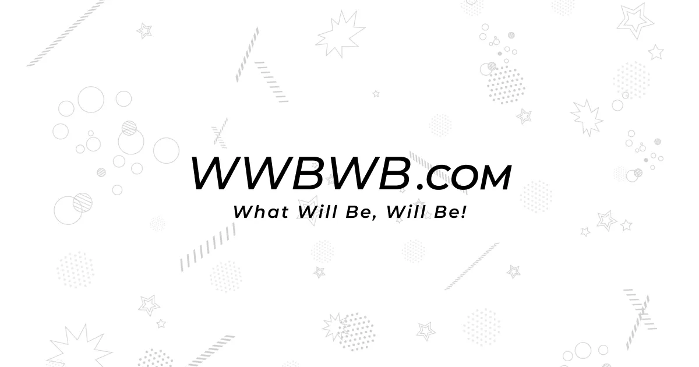
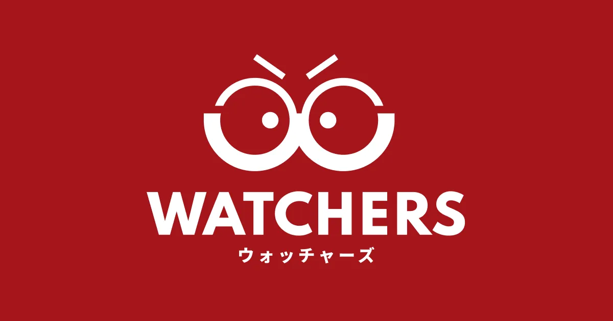
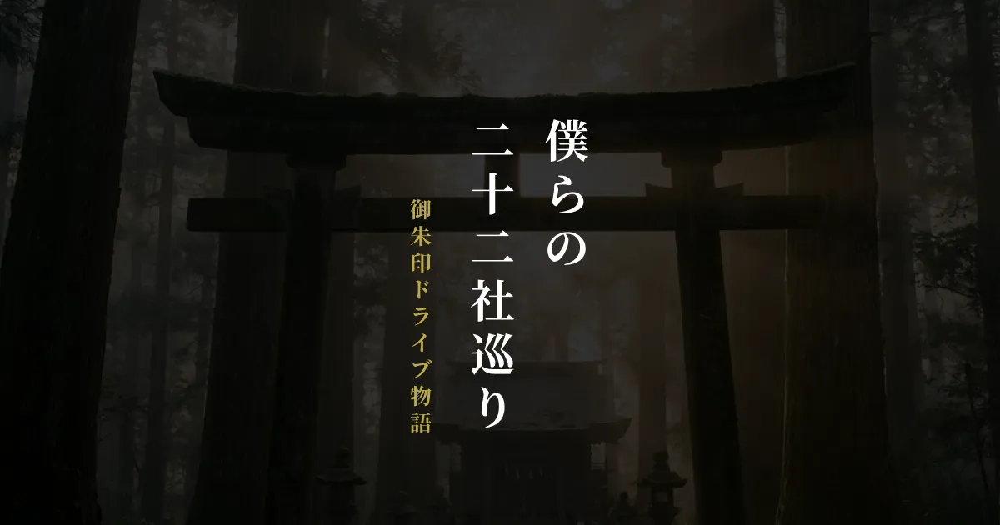
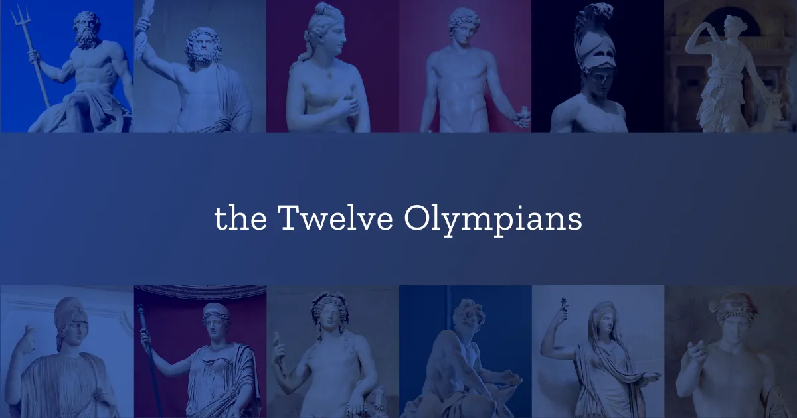
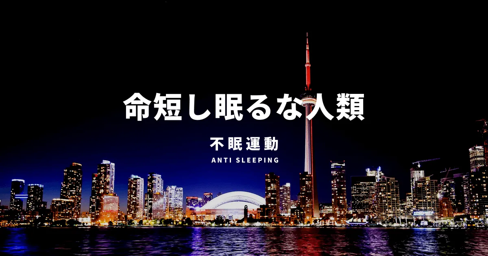
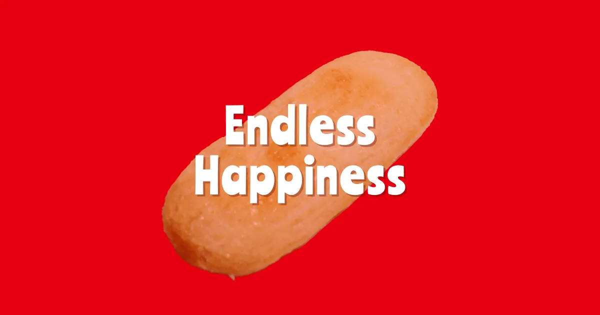
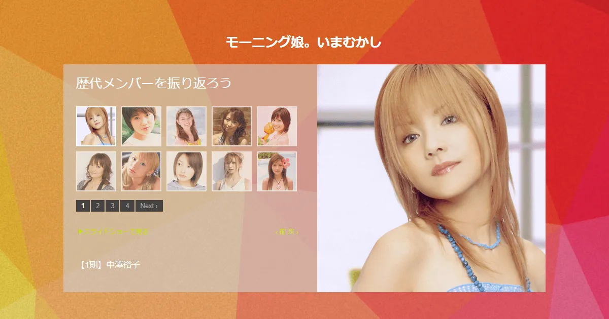
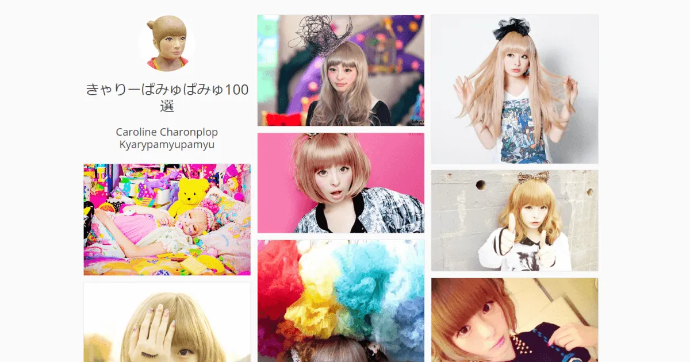

wwbwb.com Katsuki Mizoguchi Official Website
平成元年に生まれ、令和の時代まで生き延びたインターネットシティボーイ。
大阪・阿倍野をシマにWeb制作会社を営みながら、一本独鈷のウェブクリエイターとして活動しています。
「WWBWB」は、好きな言葉である "What will be, will be" を略したものです。「なるようになる」という意味で、人生を楽しめる良い言葉だなと気に入っています。
About Me
Message
平成の元年、大阪府堺市に生を受けました。
年齢を重ねるごとに体重も右肩上がりに増えつづけ、心身ともにすくすくと順調に成長してきた人生といえます。
大学卒業後はインターネット好きが高じてWeb系の会社で働くことができ、今もWebクリエイターの端くれとして仕事に取り組んでいます。
これからもこの分野で頑張っていく所存です。
Profile
- 名前
- 溝口勝樹
- 生年月日
- 1989年6月5日
- 血液型
- B型
- 出身地
- 大阪府堺市
History
- 2012年
- 大学卒業、就職
- 2014年
- ふるさと堺を飛び出し大阪市内に転居
- 2016年
- 独立して個人事業を開始
- 2018年
- 事業を法人化
SNS
Projects
Blog / Media
-
 wwbwb.com
皆さんがいまご覧の、簡素なプロフィールサイトです。自分が取り組んだことを記録・保管したり、人に見せつけたりします。
-
 WATCHERS
Netflixオリジナル作品のレビューや感想を紹介するWebマガジンです。
Business
Projects
-
 僕らの二十二社巡り
二十二社巡りの御朱印ドライブ物語です。
-
 オリンポス十二神ショー
オリンポスの神々を紹介するありがたいコンテンツです。
-
DJ KATSUTARO
稀代のDJ、「DJ KATSUTARO」のサイトです。
-
 不眠運動
"命短し眠るな人類"をテーマに、睡眠に抵抗する運動を展開しています。
-
 Endless Happiness
人間の幸福の概念を具現化したページです。
-
 モーニング娘。いまむかし
モーニング娘。の歴史（特定期間のメンバー）がわかるサイトです。
-
 きゃりーぱみゅぱみゅ100選
原宿の女神、きゃりーぱみゅぱみゅを100人集めたTumblrです。